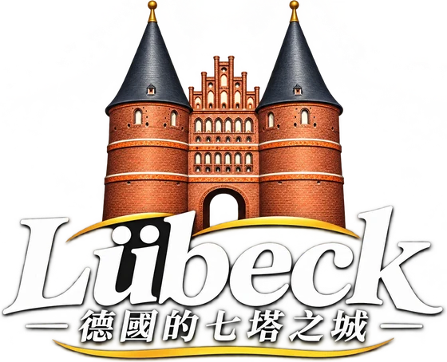

呂貝克（Lübeck）是德國北部的漢薩古城，1987 年舊城列入世界遺產，因為天際線上的七座尖塔而被稱為「七塔之城」。這裡依 OpenStreetMap 的真實街道與建築重建，可以自由走逛。
- 📖 故事 點下方「故事」看紙雕動畫與歷史；或走到天空中發亮的光束底下，會跳出介紹，也能看建築外觀。
- 🚲 🚗 騎車、開車 按「叫單車／叫車」把車叫到身邊，走近後上車。
- 🦅 黑鷹 按「黑鷹」呼叫牠，騎上去從高空俯瞰整座城市。
- 🧭 小地圖 右上角，金點是有故事的地方。
電腦：WASD 走路（Shift 跑）· 滑鼠轉視角 · E 上下車 · C／B 叫車／單車 · F 黑鷹 · T 時間 · V 視角
手機：左下搖桿移動 · 滑動畫面轉視角 · 右下小按鈕上下車 · ☰ 選單
載入中…
地理資料 © OpenStreetMap contributors（ODbL）· 材質 Poly Haven（CC0）· 角色與動作 Adobe Mixamo（經 three.js 範例）